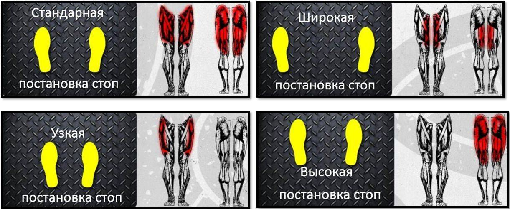

Тренажеры для жима ногами различаются углом наклона. В целом, эффективность упражнения и техника выполнения одинаковы во всех случаях.
Техника выполнения упражнения
- Установить на тренажер необходимый вес. Лечь на сидение, расположив ноги на платформе. Ноги необходимо ставить на ширине плеч или чуть шире.
- Упереться в платформу и опустить рычаг-стопор, фиксирующий ее в одном положении. В это время она начнет опускаться, поэтому нужно выпрямить ноги и держать наверху – это и есть исходное положение.
- Согнуть ноги в коленях, опуская платформу. Колени согнуты под прямым углом и практически упираются в грудь.
- Разогнуть колени, двигая платформу пятками. В верхнем положении можно выпрямлять ноги не полностью, сохраняя небольшой сгиб колена.

Советы
- Жим осуществляется пятками, поэтому их нельзя отрывать от платформы.
- Во время выполнения нужно следить за положением коленей – они параллельны друг другу и находятся на одной линии с бедром и стопой, но не разворачиваются внутрь.
- Если расставить колени в противоположные стороны, увеличивается нагрузка на ягодицы.
- Нагрузка зависит еще и от места расположения ног: близко к верхнему краю платформы – акцент на ягодицы, ближе к нижнему краю – нагрузка на мышцы бедра.
- Поясница постоянно плотно прижата к спинке. Это возможно только в том случае, если при опускании платформы колени согнуты под прямым углом.
- Спина, шея и голова зафиксирована в одном положении, руками можно взяться за поручни. Во время опускания платформы делается вдох, жим производится на выдохе.
- Упражнение не нагружает позвоночник, поэтому рекомендовано спортсменам, которые не могут из-за противопоказаний выполнять приседания со штангой. Кроме того, жим ногами существенно меньше нагружает коленный сустав, чем приседания.
Когда выполнять
Базовое упражнение выполняется в начале или середине тренировки ног и ягодиц.
Положение стоп на платформе
Положение стоп на платформе имеет большое значение, если необходимо сделать акцент на определенную мышечную группу ног. Варианты постановки стоп на платформе, при выполнении жима ногами приведено ниже.
